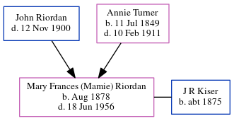

Mary Kiser (née Riordan) 1878 - 1956
[ Home ] | [ Calendar ] | [ Surnames Index ] | [ Census Index ] | [ Family History ]The child of John Riordan (a prominent cotton buyer/brpler) and Annie Turner, Mary Riordan, the great-great-aunt of Michele Copp (née Phillips), was born in Georgia in Aug 18781,2,3,4,5,6. She and was married to J R R Kiser.
During her life, she was living in Atlanta, Fulton, Georgia, USA in 18801; in Atlanta Ward 4, Fulton, Georgia in 19002; in Midway, Baldwin, Georgia in 19303; in Fulton; and in Fulton5.
She died on Jun 18, 1956 in Central State Hospital, Baldwin County, Georgia5,6 and was buried in Atlanta, Fulton County, Georgia after Jun 18, 19566.
Parents
- John was born c. 29 Jun 1840
- Annie R was born on Jul 11, 1849
Citations
- 1880 United States Federal Census Online publication - Provo, UT, USA: The Generations Network, Inc., 2005. 1880 U.S. Census Index provided by The Church of Jesus Christ of Latter-day Saints © Copyright 1999 Intellectual Reserve, Inc. All rights reserved. All use is subject to the limite (Marital Status: Single; Relation to Head: Daughter)
- 1900 United States Federal Census Online publication - Provo, UT, USA: MyFamily.com, Inc., 2004.Original data - United States of America, Bureau of the Census. Twelfth Census of the United States, 1900. Washington, D.C.: National Archives and Records Administration, 1900. T623, 1854 rolls.
- 1930 United States Federal Census Online publication - Provo, UT, USA: MyFamily.com, Inc., 2002.Original data - United States of America, Bureau of the Census. Fifteenth Census of the United States, 1930. Washington, D.C.: National Archives and Records Administration, 1930. T626, 2,667 rol (Marital Status: Divorced)
- Atlanta, Georgia, U.S., Catholic Archdiocese of Atlanta Sacramental Records, 1840-1980 Ancestry.com Operations, Inc.
- Georgia Deaths, 1919-98 Online publication - Provo, UT, USA: The Generations Network, Inc., 2001.Original data - State of Georgia. Indexes of Vital Records for Georgia: Deaths, 1919-1998. Gerogia, USA: Georgia Heatlh Department, Office of Vital Records, 1998.Original data: State
- U.S., Find A Grave Index, 1600s-Current Ancestry.com Operations, Inc.
Family Tree
Generated by ged2site. Last updated on Jun 6, 2024